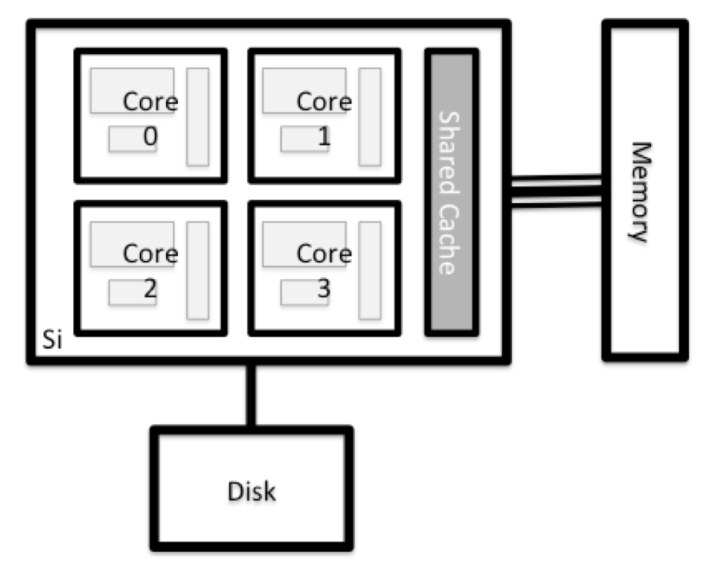

Trabajando en un sistema HPC remoto
Última actualización: 2026-03-17 | Mejora esta página
Hoja de ruta
Preguntas
- “¿Qué es un sistema HPC?”
- “¿Cómo funciona un sistema HPC?”
- “¿Cómo inicio sesión en un sistema HPC remoto?”
Objetivos
- “Conectarse a un sistema HPC remoto.”
- “Comprender la arquitectura general de un sistema HPC.”
¿Qué es un sistema HPC?
Las palabras “nube”, “clúster” y la frase “computación de alto rendimiento” o “HPC” se usan mucho en distintos contextos y con varios significados relacionados. Entonces, ¿qué significan? Y más importante, ¿cómo las usamos en nuestro trabajo?
La nube es un término genérico que suele referirse a recursos de cómputo que a) se aprovisionan a las personas usuarias bajo demanda o según necesidad y b) representan recursos reales o virtuales que pueden estar ubicados en cualquier lugar del mundo. Por ejemplo, una empresa grande con recursos de cómputo en Brasil, Zimbabue y Japón puede gestionar esos recursos como su nube interna y esa misma empresa puede también utilizar recursos de nube comerciales provistos por Amazon o Google. Los recursos de nube pueden referirse a máquinas que realizan tareas relativamente simples como servir sitios web, proporcionar almacenamiento compartido, ofrecer servicios web (como correo electrónico o plataformas de redes sociales), así como tareas de cómputo más intensivas como ejecutar una simulación.
El término sistema HPC, por otro lado, describe un recurso independiente para cargas de trabajo computacionalmente intensivas. Por lo general están compuestos por una multitud de elementos integrados de procesamiento y almacenamiento, diseñados para manejar grandes volúmenes de datos y/o un gran número de operaciones de punto flotante (FLOPS) con el mayor rendimiento posible. Por ejemplo, todas las máquinas de la lista Top-500 son sistemas HPC. Para cumplir estas restricciones, un recurso HPC debe existir en una ubicación específica y fija: los cables de red solo pueden extenderse hasta cierto punto, y las señales eléctricas y ópticas solo pueden viajar a cierta velocidad.
La palabra “clúster” se usa a menudo para recursos HPC de escala pequeña a moderada, menos impresionantes que el Top-500. Los clústeres suelen mantenerse en centros de cómputo que soportan varios sistemas de este tipo, todos compartiendo red y almacenamiento comunes para apoyar tareas de cómputo intensivas.
Iniciar sesión
El primer paso para usar un clúster es establecer una conexión desde nuestra laptop al clúster. Cuando estamos sentados frente a una computadora (o de pie, o sosteniéndola en las manos o en la muñeca), esperamos una pantalla visual con iconos, widgets y quizá algunas ventanas o aplicaciones: una interfaz gráfica de usuario, o GUI. Como los clústeres de computadoras son recursos remotos a los que nos conectamos mediante interfaces a menudo lentas o con retraso (especialmente WiFi y VPN), es más práctico usar una interfaz de línea de comandos, o CLI, en la que comandos y resultados se transmiten solo como texto. Cualquier cosa distinta al texto (por ejemplo, imágenes) debe escribirse en disco y abrirse con un programa separado.
Si alguna vez has abierto el Símbolo del Sistema de Windows o la Terminal de macOS, has visto una CLI. Si ya tomaste los cursos de The Carpentries sobre la Shell de UNIX o Control de Versiones, has usado la CLI en tu máquina local de manera relativamente extensa. El único salto aquí es abrir una CLI en una máquina remota, tomando algunas precauciones para que otras personas en la red no puedan ver (o cambiar) los comandos que estás ejecutando o los resultados que la máquina remota devuelve. Usaremos el protocolo Secure SHell (o SSH) para abrir una conexión de red cifrada entre dos máquinas, permitiéndote enviar y recibir texto y datos sin preocuparte por ojos curiosos.

Asegúrate de tener un cliente SSH instalado en tu laptop. Consulta la
sección de configuración para más detalles. Los
clientes SSH suelen ser herramientas de línea de comandos, donde
proporcionas la dirección de la máquina remota como el único argumento
obligatorio. Si tu nombre de usuario en el sistema remoto difiere del
que usas localmente, también debes proporcionarlo. Si tu cliente SSH
tiene una interfaz gráfica, como PuTTY o MobaXterm, configurarás estos
argumentos antes de hacer clic en “connect”. Desde la terminal,
escribirás algo como ssh userName@hostname, donde el
símbolo “@” se usa para separar las dos partes de un mismo
argumento.
Abre tu terminal o cliente SSH gráfico y luego inicia sesión en el clúster usando tu nombre de usuario y la computadora remota a la que puedes acceder desde el exterior, cluster.hpc-carpentry.org.
Recuerda reemplazar yourUsername por tu nombre de
usuario o el proporcionado por las personas instructoras. Puede que se
te pida la contraseña. Cuidado: los caracteres que escribes después del
mensaje de contraseña no se muestran en la pantalla. La salida normal se
reanudará una vez que presiones Enter.
¿Dónde estamos?
A menudo, muchas personas tienden a pensar en una instalación de
cómputo de alto rendimiento como una sola máquina gigante y mágica. A
veces, se asume que la computadora en la que iniciaron sesión es todo el
clúster. Entonces, ¿qué está pasando realmente? ¿A qué computadora nos
conectamos? El nombre de la computadora actual se puede comprobar con el
comando hostname. (¡Puede que notes que el hostname actual
también forma parte de nuestro prompt!)
SALIDA
login1¿Qué hay en tu directorio personal?
Las personas administradoras del sistema pueden haber configurado tu
directorio personal con algunos archivos, carpetas y enlaces (accesos
directos) útiles a espacios reservados para ti en otros sistemas de
archivos. Echa un vistazo y mira qué puedes encontrar. Pista:
Los comandos de shell pwd y ls pueden ser
útiles. El contenido del directorio personal varía de una persona a
otra. Comenta con tus vecinos cualquier diferencia que notes.
La capa más profunda debería diferir: yourUsername es
solo tuyo. ¿Hay diferencias en la ruta en niveles superiores?
Si ambos tienen directorios vacíos, se verán idénticos. Si tú o tu vecino han usado el sistema antes, puede haber diferencias. ¿En qué están trabajando?
Usa pwd para printar la ruta del
directorio de trabajo:
Puedes ejecutar ls para
listar el contenido del directorio,
aunque es posible que no se muestre nada (si no se han proporcionado
archivos). Para asegurarte, usa la opción -a para mostrar
también los archivos ocultos.
Como mínimo, esto mostrará el directorio actual como .,
y el directorio padre como ...
Nodos
Las computadoras individuales que componen un clúster suelen llamarse nodos (aunque también escucharás que las llaman servidores, computadoras y máquinas). En un clúster hay distintos tipos de nodos para diferentes tareas. El nodo en el que estás ahora se llama nodo principal, nodo de acceso, o nodo de envío. Un nodo de acceso sirve como punto de entrada al clúster.
Como puerta de enlace, es adecuado para subir y descargar archivos, configurar software y ejecutar pruebas rápidas. En general, el nodo de acceso no debe usarse para tareas que consuman mucho tiempo o recursos. Debes estar atento a esto y consultar con el personal operador o la documentación de tu sitio para detalles de lo que está o no permitido. En estas lecciones evitaremos ejecutar trabajos en el nodo principal.
Nodos dedicados para transferencia
Si quieres transferir grandes cantidades de datos hacia o desde el clúster, algunos sistemas ofrecen nodos dedicados solo para transferencias. La razón es que transferencias grandes no deberían obstaculizar el funcionamiento del nodo de acceso para el resto. Consulta la documentación de tu clúster o su equipo de soporte para saber si hay un nodo de transferencia disponible. Como regla general, considera grandes todas las transferencias de más de 500 MB a 1 GB. Pero estos números cambian, por ejemplo, según la conexión de red tuya y del clúster u otros factores.
El trabajo real en un clúster lo realizan los nodos de trabajo (o nodos de cómputo). Los nodos de trabajo vienen en muchas formas y tamaños, pero en general están dedicados a tareas largas o difíciles que requieren muchos recursos de cómputo.
Toda interacción con los nodos de trabajo es manejada por un software especializado llamado planificador, gestor de colas o scheduler (el planificador usado en esta lección se llama Slurm). Más adelante aprenderemos a usar el planificador para enviar trabajos, pero por ahora también puede darnos más información sobre los nodos de trabajo.
Por ejemplo, podemos ver todos los nodos de trabajo ejecutando el
comando sinfo.
SALIDA
PARTITION AVAIL TIMELIMIT NODES STATE NODELIST
cpubase_bycore_b1* up infinite 4 idle node[1-2],smnode[1-2]
node up infinite 2 idle node[1-2]
smnode up infinite 2 idle smnode[1-2]También hay máquinas especializadas que se usan para gestionar almacenamiento en disco, autenticación de usuarios y otras tareas de infraestructura. Aunque no solemos iniciar sesión ni interactuar directamente con estas máquinas, permiten funciones clave como asegurar que nuestra cuenta de usuario y archivos estén disponibles en todo el sistema HPC.
¿Qué hay en un nodo?
Todos los nodos en un sistema HPC tienen los mismos componentes que tu laptop o escritorio: CPU (a veces también llamadas procesadores o núcleos), memoria (o RAM) y espacio en disco. Las CPU son la herramienta de la computadora para ejecutar programas y cálculos. La información sobre una tarea actual se almacena en la memoria de la computadora. El disco se refiere a todo almacenamiento al que se puede acceder como sistema de archivos. Por lo general es almacenamiento que puede guardar datos de forma permanente, es decir, los datos siguen ahí incluso si la computadora se reinicia. Aunque este almacenamiento puede ser local (un disco duro instalado dentro del equipo), es más común que los nodos se conecten a un servidor de archivos compartido y remoto o a un clúster de servidores.

Hay varias maneras de hacer esto. La mayoría de los sistemas operativos tiene un monitor del sistema gráfico, como el Administrador de tareas de Windows. A veces se puede encontrar información más detallada en la línea de comandos. Por ejemplo, algunos de los comandos usados en un sistema Linux son:
Ejecuta utilidades del sistema
Lee desde /proc
Usa un monitor del sistema
Explora el nodo de acceso
Ahora compara los recursos de tu computadora con los del nodo de acceso.
BASH
[you@laptop:~]$ ssh yourUsername@cluster.hpc-carpentry.org
[yourUsername@login1 ~]$ nproc --all
[yourUsername@login1 ~]$ free -mPuedes obtener más información sobre los procesadores usando
lscpu, y muchos detalles sobre la memoria leyendo el
archivo /proc/meminfo:
También puedes explorar los sistemas de archivos disponibles usando
df para mostrar el espacio libre en
disco. La opción -h muestra los tamaños en
un formato legible, es decir, GB en lugar de B. La opción de
tipo -T indica qué tipo de sistema de
archivos es cada recurso.
Los sistemas de archivos locales (ext, tmp, xfs, zfs) dependerán de si estás en el mismo nodo de acceso (o nodo de cómputo, más adelante). Los sistemas de archivos en red (beegfs, cifs, gpfs, nfs, pvfs) serán similares, pero pueden incluir yourUsername, dependiendo de cómo esté montado.
Sistemas de archivos compartidos
Este es un punto importante para recordar: los archivos guardados en un nodo (computadora) a menudo están disponibles en todo el clúster.
Compara tu computadora, el nodo de acceso y el nodo de cómputo
Compara el número de procesadores y la memoria de tu laptop con los números que ves en el nodo principal del clúster y el nodo de trabajo. Comenta las diferencias con tu vecino.
¿Qué implicaciones crees que podrían tener esas diferencias al ejecutar tu trabajo de investigación en los distintos sistemas y nodos?
Diferencias entre nodos
Muchos clústeres HPC tienen una variedad de nodos optimizados para cargas de trabajo particulares. Algunos nodos pueden tener mayor cantidad de memoria, o recursos especializados como Unidades de Procesamiento Gráfico (GPU).
Con todo esto en mente, ahora veremos cómo hablar con el planificador del clúster y usarlo para empezar a ejecutar nuestros scripts y programas.
- “Un sistema HPC es un conjunto de máquinas conectadas en red.”
- “Los sistemas HPC normalmente proporcionan nodos de acceso y un conjunto de nodos de trabajo.”
- “Los recursos en nodos independientes (de trabajo) pueden variar en volumen y tipo (cantidad de RAM, arquitectura del procesador, disponibilidad de sistemas de archivos montados en red, etc.).”
- “Los archivos guardados en un nodo están disponibles en todos los nodos.”